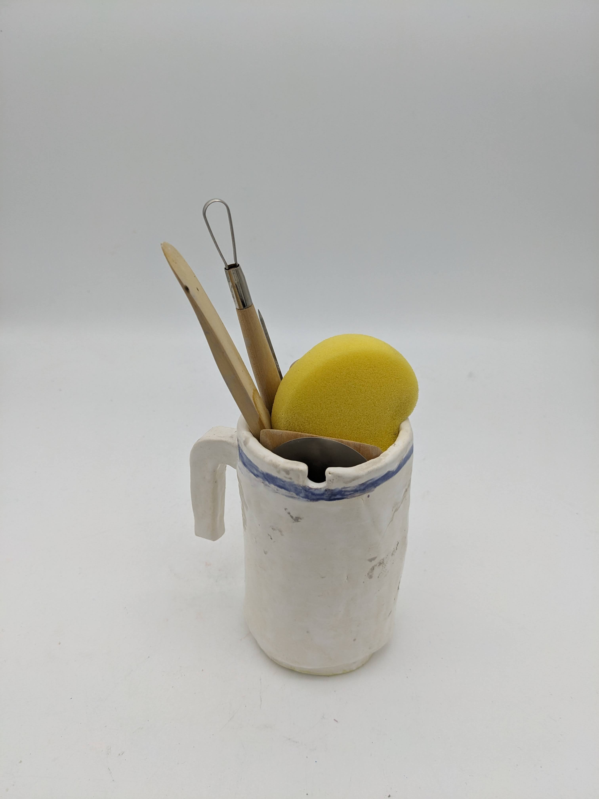

Artist cup
Inspiration
My own drinking cup at home, which was made of porcelain. Unlike the slabs we had, my actual drinking cup had walls that were quite thin... Also inspired by that cup, I tried to add a handle...
Dev't (aka commentary)
Had to smooth out clay cracks, but did a rough job; apart from that, business as usual, since shaping was otherwise not much of an issue. Attaching the handle went smoothly as well.
Create
oops
Reflect
honestly went quite bad..
- glaze bleeding, etc; need to do the stripe in UG not glaze.
- only applied 1 layer of glaze oops; also remedied by reglazing.
- tried smoothing the lateral side's cracks too hard; solution is to use even moister clay?
- handle was too thick and I pressed it too hard against the cup's side;